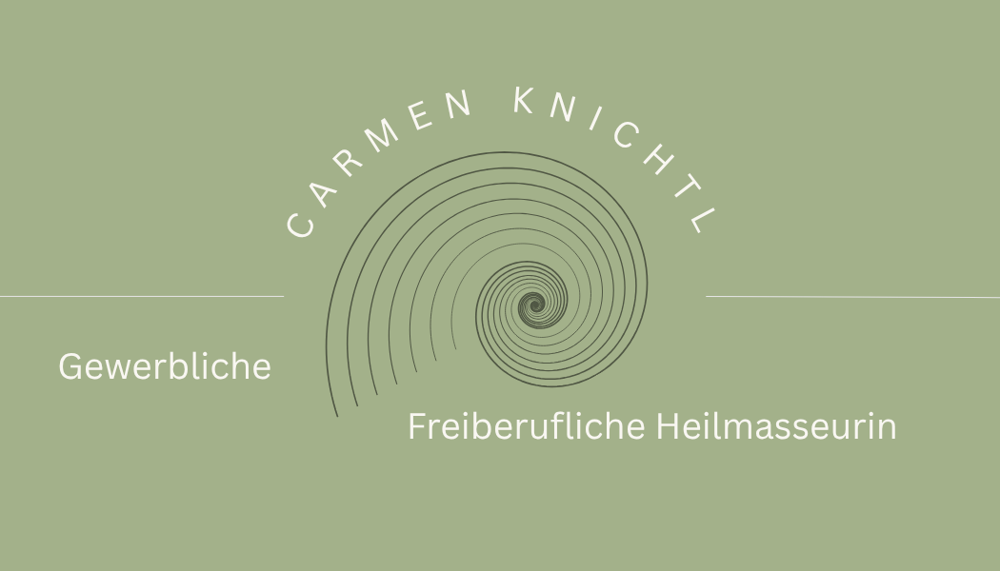

Individuelle Behandlung
Vor jeder Sitzung besprechen wir Ihre aktuellen Beschwerden und stimmen die Grifftechniken exakt auf Ihre Tagesform ab.

Jede Massage gestalte ich fachlich fundiert, respektvoll und nachvollziehbar – frei von starren Abläufen, ganz auf Sie und Ihren Körper abgestimmt.
Ob gezielte Schmerztherapie nach ärztlicher Verordnung oder wohltuende Auszeit vom Alltag: In ruhiger Atmosphäre nehme ich mir Zeit für Ihr Anliegen.
Vor jeder Sitzung besprechen wir Ihre aktuellen Beschwerden und stimmen die Grifftechniken exakt auf Ihre Tagesform ab.
Mit einer ärztlichen Überweisung zur Heilmassage können Sie die Honorarnote bei der ÖGK, SVS oder BVAEB zur Teil-Rückvergütung einreichen.
Von klassischer Massage und manueller Lymphdrainage bis hin zu Faszienarbeit, Schröpfen, Gua Sha und Hot-Stone-Massage.
Carmen Knichtl – Heilmasseurin sowie medizinische und gewerbliche Masseurin.
Meine fundierte Ausbildung habe ich in Salzburg, in Vorarlberg sowie an der renommierten Schloss-Schule in der Steiermark absolviert. Durch meine langjährige praktische Erfahrung mit Patienten und Kunden bringe ich heute ein sicheres Gespür und viel Ruhe in meine Behandlungen mit.
Ich arbeite gemeinsam mit Ihnen zielorientiert, um Ihre Beschwerden nachhaltig zu lindern und Ihr Wohlbefinden zu steigern.
Individuell abgestimmte Therapien für Regeneration, Schmerzlinderung und Entspannung.
Gerne nehme ich mir Zeit für Ihre Fragen rund um die jeweiligen Therapie- und Massagetechniken.
Eine der bekanntesten und am häufigsten angewendeten Massagetechniken. Sie basiert auf einer Vielzahl gezielter Handgriffe, die je nach Bedarf sanft bis kräftig durchgeführt werden.
Eine sanfte Technik, die besonders bei Schwellungen und Ödemen eingesetzt wird, um den Lymphfluss zu fördern, Schwellungen zu reduzieren und die körpereigene Entgiftung zu aktivieren.
Löst Verklebungen im Bindegewebe, um Spannungen und Schmerzen nachhaltig zu reduzieren und die Beweglichkeit zu verbessern.
Stimuliert gezielt Reflexpunkte am Fuß, um Organe und Körperregionen positiv zu beeinflussen und die Selbstheilungskräfte zu aktivieren.
Nutzt Vakuumgläser, um die Durchblutung und den Lymphfluss zu fördern, tief sitzende Muskelverspannungen zu lösen und Schmerzen zu lindern.
Eine bewährte Technik, bei der die Haut mit einem speziellen Schaber sanft massiert wird, um den Stoffwechsel anzuregen und Blockaden zu lösen.
Verwendet erhitzte Steine, deren Wärme tief in die Muskulatur eindringt. Wird mit der klassischen Massage kombiniert für tiefe Entspannung.
Transparente Tarife – Teil-Rückvergütung durch ÖGK & weitere Kassen mit ärztlicher Verordnung möglich.
Gezielte Teilkörperbehandlung
Umfassende Ganzkörper- oder Intensivbehandlung
Termine nach Vereinbarung – schreiben Sie mir gerne eine E-Mail, eine WhatsApp-Nachricht oder rufen Sie mich an.